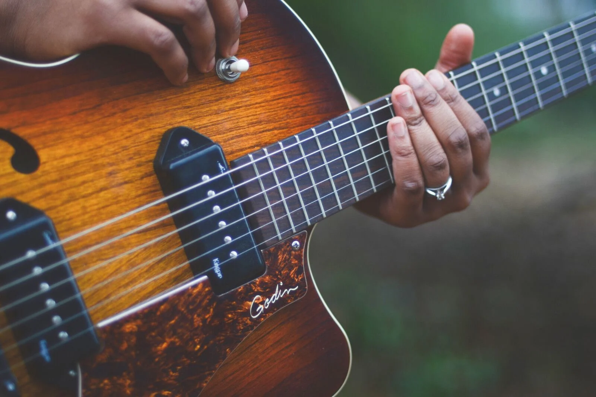
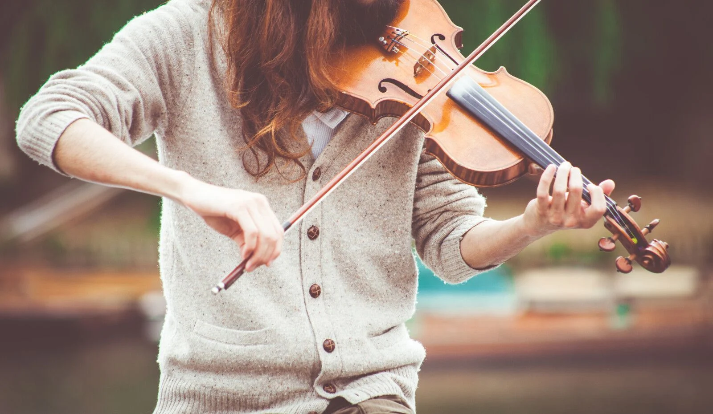
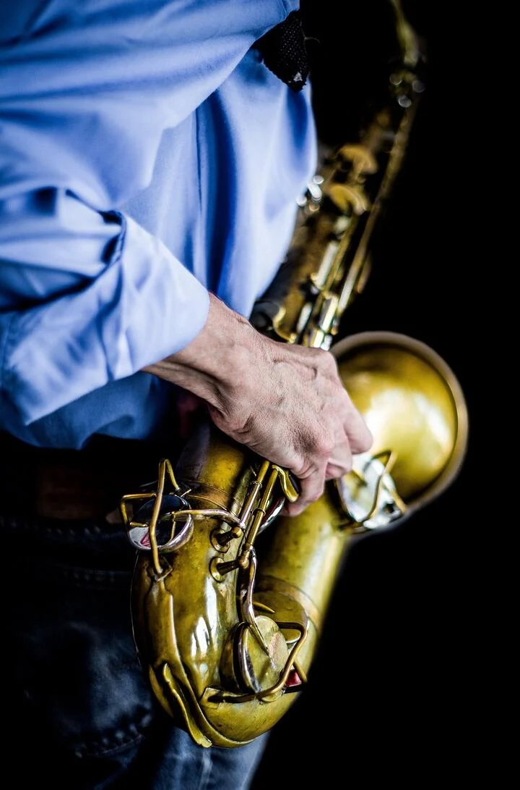
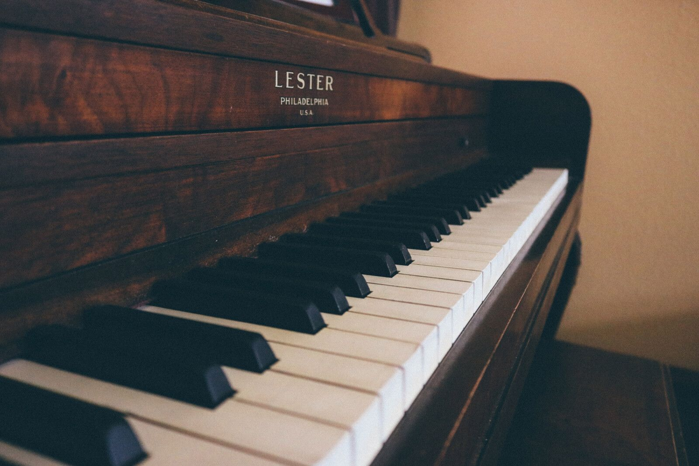

Most Popular
Drums

A drum kit is a collection of drums and other percussion instruments. It is played by a single player with drumsticks. It has some feet operating pedals that control the hi-hat cymbal and the beater for the bass drum. The drum kit may be divided into four parts such as breakables(sticks, snare drum, etc), shells(bass drum, toms, etc), extensions, and hardware(drum stands, pedal, etc). The drum is an instrument that gives a living effect to the music so if you love playing drums then what are you waiting for. Your drum is in the list of those instruments that can provide you employment. So it’s time to follow your passion.
Acoustic Guitar
This guitar produces sound through the vibration of strings. The sound is produced by plucking with the fingers or with a pick on the string. The string vibrates at a certain frequency and also creates many harmonics. It is one of the famous musical instruments. These guitars are one of the major elements of today’s music. So if you are into playing guitars, the music industry is waiting for you with open arms.
Violin
The violin has a wide variety of musical genres. They are important in the western classical tradition and as solo instruments and in folk music. It is one of the famous musical instruments. Further, the violin has come to be played in many non-Western music cultures, including Indian music and Iranian music.
Saxophone
The saxophone is woodwind instruments. It is made up of brass and it is played with a single-reed mouthpiece. It has holes in it which player closes using a system of key mechanisms. It is used in classical music, orchestras, marching bands. It is not a common instrument among people as a hobby.
Flute

A quiet and highly portable instrument, it is very easy to learn, according to the Ambient Mixer blog, and doesn’t cost too much money. It can also be used as a stepping stone to other instruments. Though primarily a classical instrument, it has adapted to other genres and was a foundational instrument for the 1970s rock group Jethro Tull.
Piano
Some experts separate the two, and they do have different uses, but the basics are very similar. Some instructors believe that learning to play piano should be a prerequisite for learning any other instrument. “Despite being a single instrument, a piano covers the full spectrum of any instrument featured in the orchestra,” according to the La Habra and Corona Music Centers. It teaches coordination between hands and between the hand and the eye.